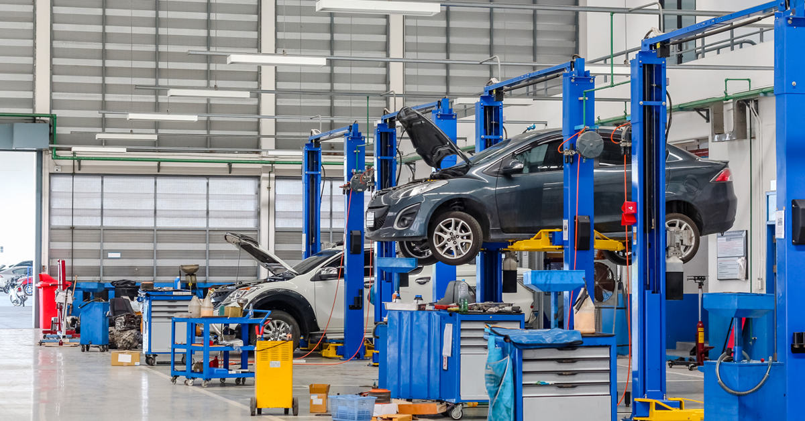

Realize a manutenção do seu veículo com os serviços automotivos da Auto Elite.
A Auto Elite tem tudo o que você precisa para garantir que você dirija com segurança e
tranquilidade.
Contamos com uma ampla oferta de serviços de manutenção e reparação para deixar seu carro sempre
novo.
Agende um horário para realizar a manutenção e fazer a revisão completa do seu carro. Na
revendedora Auto Elite garantimos o melhor serviço com excelente atendimento.
Consulte-nos para descobrir como economizar sem abrir mão da qualidade. Conheça os serviços Auto
Elite.

Clínica de Serviços
A Clínica de Serviços Auto Elite é um espaço reservado a serviços de manutenção de seu veículo, que
incluem check up e revisões para garantir a segurança de nossos clientes ao dirigir.
Revisão Auto Elite
Atenção às necessidades do seu carro para que ele esteja sempre novo.
Para valorizar seu automóvel, manter a garantia de fábrica e o desempenho perfeito, é essencial
fazer as
revisões recomendadas pela montadora nos prazos indicados.
A Sempre tem o plano de manutenção adequado ao seu veículo, conforme manual do proprietário,
acompanhando todas as recomendações dentro de checagem/substituições nos intervalos de 10mil km ou
12
meses.
Manutenção Preventiva
A Manutenção Preventiva é importante para ter seu veículo sempre nas melhores condições de uso para
sua
segurança e de seus familiares. Os Kits Instalados Auto Elite são pacotes de serviços para a
manutenção
preventiva ou corretiva do seu veículo. Ao realizar o serviço, você tem garantia de 1 ano nas peças,
aproveita a qualidade e ainda a conveniência de agendar o seu horário de atendimento.
Lubrificantes Automotivos
Mais saúde para o motor do seu carro.
A Auto Elite recomenda lubrificantes específicos para cada tipo de motor, desenvolvidos com os mais
rigorosos padrões de qualidade e tecnologia de ponta, atendendo às especificações técnicas e agindo
ativamente na manutenção do seu veículo.
Faça a troca de óleo dos períodos indicados pela marca de seu carro e mantenha o bom funcionamento
do
motor além de economizar combustível.
Funilaria e Pintura
Seu carro sempre novo para você aqui na Auto Elite.
Seu carro sempre novo com serviços de funilaria e pintura da nossa rede. Os melhores profissionais
do
mercado vão deixar seu carro como novo, temos os melhores serviços de estética automotivo e auto
detailing.
O atendimento exclusivo também deixa tudo mais fácil. Seu carro pode ficar pronto em, no máximo,
duas
horas.
Troca de Pneus
Troque seu Pneu com a Auto Elite e mantenha seu carro seguro.
Os pneus são um dos principais itens de segurança do seu veículo, para evitar problemas maiores,
devemos
ficar sempre atentos às condições de desgaste:
Se os cabos e/ou tecidos estiverem à mostra.
Se a banda de rolagem ou flanco estiver rachado ou com corte profundo.
Se há algum calo ou protuberância.
Por isso a Auto Elite está pronta para lhe atender para a troca do seu pneu. Aqui você encontra tudo
o
que precisa para rodar tranquilo.
Alinhamento e Balanceamento
Quer ter o melhor desempenho no seu veículo e o menor desgaste nos pneus?
É simples! Mantenha o alinhamento e o balanceamento corretos dos pneus e siga as dicas de manutenção
presentes no manual do proprietário e no manual do fabricante do pneu. Estes cuidados fazem com que
os
pneus e vários outros itens de segurança e estrutura do seu veículo não sofram nenhum desgaste
prematuro.
Por isso a Auto Elite está pronta para lhe atender, aqui você encontra tudo o que precisa para rodar
tranquilo.
Garantia Estendida
Quer ter a tranquilidade de contar com a proteção e segurança para você e o seu carro por um período
de
até 5 anos?
O Seguro Proteção Mecânica Auto Elite é o produto certo. Com ele, a garantia de fábrica do seu
Chevrolet
pode ser estendida por um período total de até 5 anos. Com esse serviço você garante economia para
casos
de imprevistos com o seu carro durante o período estendido, realizando eventuais reparos em nossa
loja
sempre com peças de fabrica e mão de obra gratuita para os itens cobertos.
Confira os itens de cobertura da garantia estendida:
Cobertura Básica
Itens inclusos na cobertura básica:
Motor
Câmbio
Sistema de refrigeração
Transmissão e caixa de transferência
Diferencial (coroa e pinhão, eixos, engrenagens, rolamentos e buchas)
Cobertura Completa
Todos os itens da cobertura básica, mais os itens abaixo
Sistema elétrico
Sistema de alimentação
Suspensão
Sistema de direção
Sistema de ar condicionado
Sistema de freios
Financiamento
O melhor caminho para você chegar até o seu carro 0KM.
A Auto Elite Serviços Financeiros procura desenvolver soluções que se encaixem ao seu perfil, sempre
atentos às suas necessidades. Ajudamos você a conquistar o seu sonho
Confira os produtos e serviços da Auto Elite Serviços Financeiros abaixo:
Quer pagar sempre parcelas que cabem no seu bolso? Pode contar com a gente.
Entrada a partir de 0%.
Parcelas em até 60 meses.
Consecutivas e de mesmo valor.
Quer estar sempre de carro 0KM? Aqui é o seu lugar.
Parcelas em até 48 meses (exclusividade da Auto Elite Serviços Financeiros).
Parcelas em até 60 meses.
Parcela final no valor de 15% a 40% do valor do carro.
Use o próprio veículo para quitar a parcela final e aproveite o saldo para dar de entrada em um
novo.
Assim você paga parcelas mensais menores do que em um financiamento regular e ainda pode trocar de
carro ao final do contrato, mantendo sua garagem sempre renovada. Venha até uma de nossas lojas
fazer uma simulação.
Quer começar a pagar daqui a 2, 3 ou 4 meses? Aqui quem escolhe é você.
Entrada a partir de 20%
Parcelas fixas em até 60 meses
Comece a pagar depois de 2, 3 ou 4 meses, da forma que você escolher
Aproveite esse tempo para começar a pagar e antecipe a compra do seu tão sonhado carro 0KM.
Se programe para pagar menos no início e não comprometer seus outros compromissos financeiros.
Quer pagar menos durante 12 meses? Aqui você pode.
Entrada a partir de 30%
Parcelas em até 60 meses.
12 primeiras parcelas com valor 50% menor que as parcelas regulares.